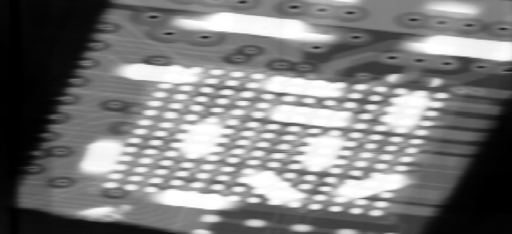
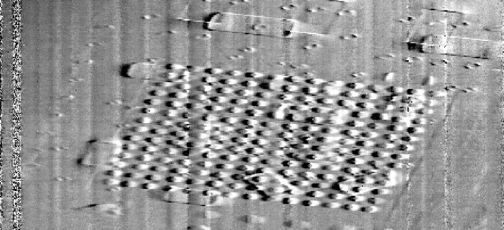
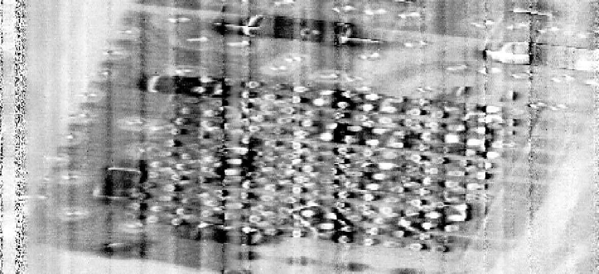

Dark-field imaging for hard X-ray grating interferometry: predictive models and applications
Goal
Feasibility and performance assessment of grating interferometry for general purpose applications
Outline
- Talbot interferometry
- Why high energy?
- The edge-on geometry
- Quantitative dark-field imaging
- Omnidirectional dark-field imaging
The fractional Talbot effect
\( D_j = \left(j - \frac{1}{2}\right) \frac{p_1^2}{4 \lambda} \)The analyzer grating \(G_2\)
\( s(x) = a_{0} + a_{1} \cos\left(\frac{2 \pi}{p_2} x + \theta\right) \)Comparing the curves
\( s(x) = a_{0} + a_{1} \cos\left(\frac{2 \pi}{p_2} x + \theta\right) \)| signal | definition |
|---|---|
| transmission | \(A = a_{0,s} / a_{0,f}\) |
| differential phase | \(P = \theta_{s} - \theta_{f}\) |
| visibility | \(v = 2a_1 / a_0\) |
| visibility reduction | \(B = \frac{v_s}{v_f} = \frac{a_{1,s}}{a_{0,s}}\frac{a_{0,f}}{a_{1,f}}\) |
| log ratio | \(R = \frac{\log B}{\log A}\) |
General purpose applications
- table top, incoherent source
- energies above 100 keV
Incoherent sources
a third grating \(G_0\) creates an array of individually coherent but mutually incoherent sources
Gratings for higher energy
- for a constant setup length \(D_j = \frac{p_1^2}{2 \lambda} \Rightarrow p \propto 1/\sqrt{\energy}\)
- for an efficient absorption \(\mu = 2k\beta \propto \energy^3\)
aspect ratio \(r = 2h / p \propto \energy^{7/2}\)
Manufacturing with very high aspect ratios
- inconsistent structures
- incomplete growth
The edge-on setup
illuminating gratings from one side
The edge-on setup
- design energy: 100/120 keV
- absorption thickness: 800 μm
The edge-on setup
first imaging results
absorption
differential phase
dark field
Quantitative dark-field imaging
A two dimensional setup
- design energy: 45 keV
- CdTe prototype detector by Dectris Ltd.
Quantitative study of microstructures
Lynch et al., 2011 for a monochromatic source
Quantitative study of microstructures
Lynch et al., 2011 for a monochromatic source

First trial on a polychromatic source: microspheres
- monodisperse silica microspheres in 20% glycerol solution
- incoherent sum of the dark-field response by Lynch et al. over the spectrum \(w(\energy)\)
\[ R(\energy) = \frac{\log B}{\log A} = \frac{\mu_B(\energy)}{2k\beta(\energy)} \]
\[ R = \sum_\energy w(\energy) R(\energy) \]
First trial on a polychromatic source: microspheres
A complex sample: lungs
- model the lung as a collection of spheres of different diameters (Kitchen et al. 2004);
- determine the distribution of diameters with a high-resolution computed tomography;
- calculate the expected dark-field response by summing over the different energies and diameters;
- compare to the dark-field measured on the laboratory source radiography.
High-resolution tomography at the TOMCAT beamline
- 0.65 μm resolution
- 1800 projections
- reconstruction (gridrec algorithm)
- segmentation
High-resolution tomography at the TOMCAT beamline
- stitching
High-resolution tomography at the TOMCAT beamline
- euclidean transformation = distance to closest wall
High-resolution tomography at the TOMCAT beamline
- thickness map, fit the largest sphere fitting each empty space
High-resolution tomography at the TOMCAT beamline
- distribution of diameters \(\rho(d)\)
- 8 samples (fixed mouse lungs)
Predicting dark-field values
incoherent sum over the spectrum and diameters
\( \mu_{B,\text{total}} = \sum_{d}\sum_{\energy} \mu_B(d, \energy; n, f)\rho(d)s(\energy) \)
Comparing predicted and measured values
Omnidirectional dark field on conventional sources
Technique designed by Kagias et al. 2016 on a synchrotron source
Pinhole array of coherent sources
same idea as in Talbot-Lau interferometry
- L = 57 cm
- D = 110 cm
- design energy 30 keV
- source 60 kVp
- p = 2 μm, P = 300 μm
Self image
- The cell pattern is replicated at the detector plane thanks to the Talbot effect
- Each cell becomes a pixel in the reconstruction
Following carbon fibers
Conclusions and outlook
- edge-on 1D Talbot-Lau interferometers for 160 kVp, and above
- 2D Talbot-Lau interferometers operating at 100 kVp, reaching the energy of general purpose medical applications
- quantitative prediction of the dark-field value from microstructural properties of mouse lungs, with applications to the early diagnosis of emphysema and lung cancer
- omnidirectional interferometry realized on a conventional source allows the retrieval of dark-field signals under different angles in a single shot